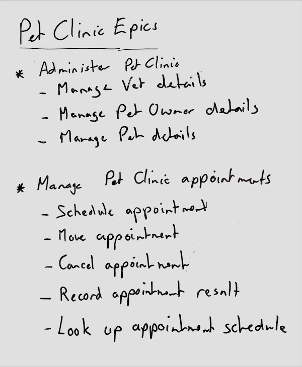

Whiteboarding Stories
Get enough coarse-grained epic stories on the whiteboard to inform the design. It is easy to write a lot of story details, but only do so if the details are really important to the design.
Ideally the users and stakeholders of the system are actively involved while writing down the stories describing how they will use the system. If so, guide them to describe all the functionality of the system at a pretty high level. You can use any structure that captures well how people talk about the software systems.

Talk through stories from the perspective of each actor's needs. Different actors may share some stories but have slightly different needs during such a story.
Limit the level of detail if you can
Sometimes, users or domain experts will insist on going into a lot of detail about a particular story because they consider those details particularly vital to the system. When this happens, capture the details using a Given/When/Then Gherkin-style story, but you do not need to do this for all stories.
If it is difficult to group stories into coarse-grained epics, simply switch to event storming to capture multiple stories in a flow consisting of domain events, and return back to the story list later.
Avoid setting priorities
Teams used to using stories with backlogs in agile development processes may look to start prioritizing stories already. This is not needed yet: prioritization of development can happen more easily after the architecture has been defined using Caseum. This is more effective, because when the whole architecture is visible in different views it is often obvious some stories must go first.
Storming stories
It can be effective in bigger groups to split the story writing into small groups. There are many possibilities. For example, you may use a variant of the 1-2-4-All Liberating Structure:
- have everyone sit individually for up to 5 minutes writing stories on sticky notes. Ask them to consider each actor.
- add all the stories to the whiteboard grouped by actor. Take a moment to consider overlap, and have shared stories grouped with their main actor.
- divide the team into subgroups per actor. Have the subteams take 10 minutes to rewrite all the stories, combining and integrating the different inputs, and adding new ones.
- have subteams take two minutes each to describe the revised stories to the whole team.